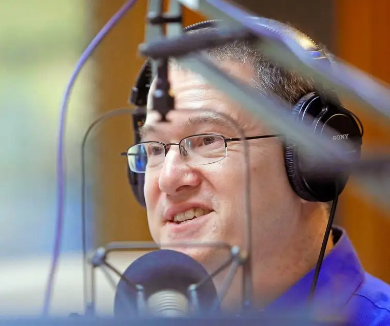

[For the sake of having a repository for my newspaper columns and articles, and allowing a second chance for those who missed them the first time, I reprint them here, with permission. The following ran in The Forum newspaper on July 26, 2014.]

Faith conversations: Faith-based radio filling a void for believers
By Roxane B. Salonen
Sabin, Minn. – In the past, Maria Roesch’s radio dial was permanently fixed at her favorite country station. But that changed after she moved to the area about 12 years ago and discovered faith-based radio.
 |
| Tim Unsinn, KFNW manager/Dave Sampson (The Forum) |
{kind=link}
Her favorite, Life 97.9 FM, KFNW, is a contemporary Christian station airing today’s most popular inspirational music.
“Particularly when my brother passed away six years ago, it became an important part of my life, a source of hope and strength during that time,” says Roesch. “Now, it’s all that’s on in my car. It’s a constant reminder that God is with us and that he loves us.”
Recently, she’s noticed more of her office co-workers tuning into faith-based radio as well. The trend doesn’t really surprise Roesch, given the frenetic pace of our modern lives.
“You’re running here and there, and then you get into the car and listen, and it’s just kind of that time to pause, and a reminder to share God’s love with others, whether it’s just a smile or opening a door for someone. We’re all going through something.”
A welcoming approach
Roesch’s favorite station is by no means new. Tim Unsinn, station manager of KFNW, a subsidiary of Northwestern College in St. Paul, says it’s been here about 50 years on the FM band, and 55 years on AM.
But since around the time Roesch first started tuning in, the programming and delivery have changed.
“About 12 years ago, there was a concerted effort to being more inclusive,” he says. “We used to have a certain kind of language we call ‘Christian-ese,’ but we’ve tried to get away from that. We were finding that some people who were coming to listen didn’t feel welcomed or invited.”
In his seven years at the station, Unsinn says, he’s encouraged the new direction of music with a message of love and hope “without all the preaching.”
The station doesn’t want to replace the church, he says, but to be a support system to believers – something that seems to be working. Listeners have called in to share about marriages being saved and suicidal thoughts being thwarted, all because of hearing something on the radio that sparked hope in a time of despair.
“It’s making a difference, and to some, a life-changing one,” Unsinn says.
Spreading like wildfire
Real Presence Radio is a relatively new, and quickly growing, Catholic radio station in the region. Its signal reaches across North Dakota, as well as into parts of Minnesota, South Dakota and even Canada, with transmitters being planted throughout.
The station began as an idea in 1989, when a small group of area faithful shared their mutual desire to have the Catholic message on air. But it didn’t come to fruition until about 15 years later, in 2004, when a station became available for purchase in Grand Forks, 1370 AM, KWTL.
Steve Splonskowski, executive director, says the group then decided to incorporate, and when listeners from the Fargo-Moorhead area began asking if they could get the same programming here, talks of expansion began.
“The first project was to raise enough money to buy a large enough transmitter,” Splonskowski says. “I was hired in the middle of that.”
They continued raising funds for the non-profit station while waiting for approval from the Federal Communications Commission to boost their signal. That happened in 2008, and in 2009, Real Presence Radio purchased a second station in Moorhead – 1280 AM, KVXR.
From there, it continued to grow, expanding in 2010 into the western part of the state, to now include Minot, Dickinson, and soon, Williston. “It’s evolved as we’ve gone along, with the Lord giving us guidance all the way,” Splonskowski says.
The station relies heavily on regular programming from the Eternal World Television Network, and comprises mostly all Catholic talk radio, with local shows sprinkled in.
“Our goal is to meet people where they’re at and have that intellectual dialog that will draw them deeper into their relationship with the Lord, no matter what their faith,” he says.
A grounding force
Cora Suda of Horace, N.D., says she first discovered faith-based radio in college while driving back and forth between home and Minnesota State University Moorhead.
“I just noticed that listening to it drew my thoughts toward God, rather than all the other things that can distract us,” she says.
In time, she began journeying toward the Catholic faith, and listening to talk shows on the radio proved instrumental.
“I was still in that hyperactive place where I wanted to soak in as much of the faith as I could,” she says, adding that Catholic radio helped answer questions and expand her knowledge of what it means to live a life in Christ.
Now a mother of two young children, Oliver, 3 and Maggie, almost 2, Suda says Real Presence Radio has on some days taken the place of faith reading and even some of her silent prayer time, which is so elusive right now.
“It’s grounding. You are kind of just flying through your days – which are busy and exhausting – and then it just pulls me back down to earth, in the car or whenever. Anytime I have a chance to listen to it, I do.”
The accessibility factor seems a commonly voiced benefit of faith-based radio.
Recently, Roesch had to have an MRI done, and since she’s claustrophobic, she approached the procedure with dread. But when the staff said she could listen to her choice of radio stations, she chose 97.9 and was immediately put at ease. “The right song at the right time can make a huge difference.”
Indeed, you never know when we’re going to need a message of hope, Unsinn adds.
“You could be having the greatest day and go to the doctor and get some news of cancer, or learn of the loss of a friend or loved one,” he says. “The hope isn’t just in the song but in the message, and that’s the love of Jesus Christ.”